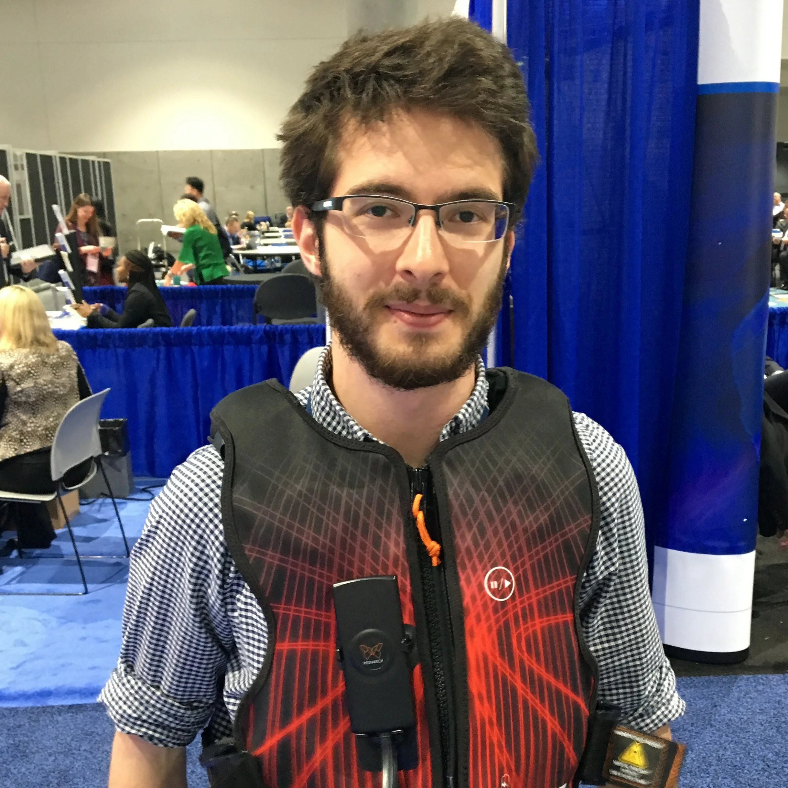

 My name is Michal Swoboda. I specialize in embedded systems development and product design for medical devices. As the co-founder and Chief Technology Officer of RightAir LLC, I developed the first, fully-wearable cuirass ventilator. I graduated from Drexel University with a Master's Degree in Biomedical Engineering in 2017. My master thesis project focused on developing an implantable mfNIR platform to monitor hemodynamic activity of cortical tissue during cerebrovascular events such as vessel occlusion or hemorrhage.